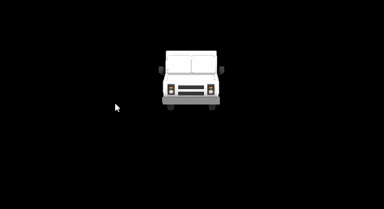

GPU Rasterizer C++, CUDARepo

Cesium Milktruck
In this project, I implemented a simple rasterization pipeline to render meshes:
Vertex Shading, Primitive Assembly, Rasterization, and Fragment Shading.
Visit my repo for more details and an in-depth performance analysis.